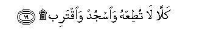

بسم الله الرحمن الرحيم
Sayyid Abul Ala Maududi - Tafhim al-Qur'an - The Meaning of the Qur'an
 96.
Sura Al Alaq (The Clot)
96.
Sura Al Alaq (The Clot)
The Surah is so entitled after the word `alaq in the second verse.
This Surah has two parts: the first part consists of vv. 1-5, and the second of vv. 6-19. About the first part a great majority of the Islamic scholars are agreed that it forms the very first Revelation to be sent down to the Holy Prophet (upon whom be Allah's peace and blessings). In this regard, the Hadith from Hadrat Aishah, which Imam Ahmad, Bukhari, Muslim, and other traditionists have related with several chains of authorities, is one of the most authentic Ahadith on the subject. In it Hadrat Aishah has narrated the full story of the beginning of revelation as she herself heard it from the Holy Messenger of Allah. Besides, Ibn Abbas, Abu Musa al-Ashari and a group of the Companions also are reported to have stated that these were the very first verses of the Quran to be revealed to the Holy Prophet. The second part was sent down afterwards when the Holy Prophet (upon whom be peace) began to perform the prescribed Prayer in the precincts of the Kabah and Abu Jahl tried to prevent him from this with threats.
The traditionists have related on the strength of their respective authorities the story of the beginning of revelation from Imam Az-Zuhri, who had it from Hadrat Urwah bin Zubair, who had it from Hadrat Aishah, his aunt. She states that revelations to the Holy Prophet (upon whom be peace) began in the form of true (according to other traditions, good) visions. Whichever vision he saw it seemed as though he saw it in broad daylight. Afterwards solitude became dear to him and he would go to the Cave of Hira to engage in worship there for several days and nights (Hadrat Aishah has used the word tahannuth, which Imam Zuhri has explained as ta'abbud: devotional exercises. This was some kind of worship which he performed, for until then he had not been taught the method of performing the Prayer by Allah). He would take provisions with him and stay there for several days, then would return to Hadrat Khadijah who would again provide for him for a few more days. One day when he was in the Cave of Hira, Revelation came down to him unexpectedly and the Angel said, to him: "Read".
After this Hadrat Aishah reports the words of the Holy Prophet himself, to the effect, "I said: I cannot read! There upon the Angel took me and pressed me until I could bear it no more. Then he left me and said: Read. I said: I cannot read! He pressed me a second time until I could bear it no more. Then he left me and said: Read. I again said: I cannot read! He pressed me for the third time until I could bear it no more. Then he left me and said: Iqra bismi Rabbi kal- ladhi khalaqa: (Read in the name of your Lord Who created) till he reached ma lam ya lam (what he did not know).
Then the Holy Messenger (upon whom be peace) returned home to Hadrat Khadijah trembling with fear, and said to her: `Cover me, cover me', and he was covered. When terror left him, he said: `O Khadijah, what has happened to me?' Then he narrated to her whatever had happened, and said: `I fear for my life'. She said; `No never! Be of good cheer. By God, never will God debase you: you treat the kindred well, you speak the truth, (one tradition adds: you restore what is entrusted to you), you bear the burden of the helpless, you help the poor, you entertain the guests, and you cooperate in good works.'
Then she took him to Waraqah bin Naufal, who was her cousin. He had become a Christian in pre-Islamic days, wrote the Gospel in Arabic and Hebrew, and had become very old and blind. Hadrat Khadijah said: `Brother, listen to the son of your brother.' Waraqah said to the Holy Prophet: `What have you seen, nephew?' The Holy Prophet described what he had seen. Waraqah said; `This is the same Gabriel (the Angel of Revelation) which Allah had sent down to Moses. Would that I were a young man during your Prophethood! Would that I were alive when your tribe would expel you!' The Holy Prophet said: `Will they expel me?' Waraqah said; `Yes, never has it so happened that a person brought what you have brought and was not treated as an enemy. If I live till then I would help you with all the power at my command.' But not very long after this Waraqah died.
This narrative is explicit that even until a moment before the coming Angel the Holy Messenger of Allah (upon whom be His peace) was without any expectation that he was going to be appointed a Prophet. Nothing to say of any such wish or expectation, he did not even have any idea that he would meet with such an experience. Coming down of the Revelation and appearing of the Angel face to face was an unexpected accident for him the first effect of which on him was precisely the same as could naturally be on a person meeting with such a tremendous experience, in the absence of any preparation. That is why when he proclaimed the message of Islam, the people of Makkah raised all sorts of objections, but no one said that they were already apprehending that he would make a claim, for he had been making preparations since long to become a Prophet.
From this narrative another thing which also becomes obvious is how pure was the Holy Prophet's life and how sublime was his character before Prophethood, Hadrat Khadijah was no young lady: she was 55 years old at the time this event took place and had been the Holy Prophet's life companion for 15 years. No weakness of the husband can remain hidden from the wife. She had during this long period of married life found him to be such a generous and noble man that when he told her of his experience in the Cave of Hira', she admitted without the least hesitation that it was indeed Allah's own Angel who had come to him with Revelation. Likewise, Waraqah bin Naufal also was an old inhabitant of Makkah, who had seen the Holy Prophet grow up from childhood. Particularly, for the past 15 years because of the close relationship he was even more intimately aware of his life, his Affairs and dealings. When he also heard of his experience, he did not regard it as an evil suggestion, but immediately said that it was the same Gabriel who had descended on Moses (peace be upon him). This meant that even according to him the Holy Prophet was such a sublime person that there was nothing surprising in his being elevated to the office of Prophethood.
This second part of thee Surah was revealed when the Holy Messenger of Allah began to perform the Prayer in the Islamic way in the Ka'bahand Abu Jahl threatened and tried to prevent him from this. It so happened that after his appointment to Prophethood even before he could start preaching Islam openly, he began to perform the Prayer in the precincts of the Ka'bahin the way Allah taught him; and from this the Quraish felt for the first time that he had adopted a new religion. The other people were watching it with curiosity, but Abu Jahl in his arrogance and pride threatened the Holy Prophet and forbade him to worship in that way in the Ka'bah. In this connection, quite a number of the Ahadith have been related from Hadarat Abdullah ibn Abbas and Hadrat Abu Huraira, which mention the foolish behaviour of Abu Jahl.
Hadrat Abu Huraira says that Abu Jahl asked the people of Quraish: "Does Muhammad (upon whom be Allah's peace and blessings) set his face on the ground before you?"When they replied in the affirmative, he said:"By Lat and Uzza, if I ever catch him in that act of worship, I would set my foot on his neck and rub his face in the dust."Then it so happened that he saw the Holy Messenger in that posture and came forward to set his foot on his neck, but suddenly turned back as if in a fright and being asked what was the matter, he said there was a ditch of fire and a terrible apparition between himself and Muhammad (upon whom be Allah's peace and blessings) and some wings. On hearing this the Holy Prophet remarked:"Had he come near me, the angels would have smitten and torn him to pieces." (Ahmad, Muslim, Nasai, Ibn Jarir, Ibn AbI Hatim, Ibn al-Mundhir, lbn Marduyah, Abu Nu'aim Isfahani, Baihaqi).
According to lbn Abbas, Abu Jahl said:"If I caught Muhammad (upon whom be Allah's peace and blessings) performing his Prayer by the Ka'bah, I would trample his neck down." When the Holy Prophet heard of it, he said: "If he acted so, the angels would seize him there and then?" (Bukhari, Tirmidhi, Nasai, Ibn Jarir, Abdur Razzaq, Abd bin Humaid, Ibn al- Mundhir, Ibn Marduyah).
According to another tradition from Ibn Abbas, the Holy Prophet was performing his Prayer at the Maqam Ibrahim. Abu Jahl passed that way and said: "O Muhammad, did I not forbid you this, and then he started to threaten him." In reply the Holy Prophet (upon whom be peace) rebuked him severely. There upon he said:"O Muhammad, on what strength do you rebuke me? By God, my followers in this valley far exceed yours in number." (Ahmad, Tirmidhi, Nasai, Ibn Jarir, lbn Abi Shaibah, Ibn al-Mundhir, Tabarani, Ibn Marduyah).
Because of these very incidents the portion of this Surah beginning with Kalla inn al-insana la yat gha was sent down. Naturally the place of this part should be the same as assigned to it in this Surah of the Quran, for after the coming down of the first Revelation the Holy Prophet had given expression to Islam first of all by the act of Prayer, and his conflict with the pagans.

In the name of Allah, the Compassionate, the Merciful.
[1-5] Read1 in the name of your Lord2 Who created.3 Created man from a clot of congealed blood.4 Read, and your Lord is Most Generous. Who taught knowledge by the pen,5 taught man what he did not know.6
[6-10] Indeed not!7 Man behaves rebelliously for he deems himself to be self-sufficient,8 (although) towards your Lord indeed is the return.9 Have you seen the one who forbids a servant when he prays?10

[11-19] What do you think: if (the Servant) be on the right path, or be exhorting to piety? What do you think, if the one forbidding be belying (the Truth) and turning away? Does he not know that Allah sees?11 By no means!12 If he does not desist, We shall drag him by his forelock, the forelock that is lying and utterly sinful.13 So let him call his band of supporters.14 We, too, shall call the angels of torment.15 Nay, never! Do not obey him, and prostrate yourself and draw closer (to your Lord).16
1As we have explained in the Introduction, when the Angel said to the Holy Prophet, "Read", the latter replied, "I cannot read!"" This indicates that the Angel had presented these words of the Revelation before him in the written form and had asked him to read them. For if the Angel had meant that he should repeat what he recited, he should not have replied, saying "I cannot read!"
2"Read in the name of your Lord": Bismillah and read. This shows that the Holy Prophet (upon whom be peace) even before the coming down of this Revelation regarded and acknowledged Allah alone as his Lord. That is why there was no need to ask who his Lord was, but it was said: "Read in the name of your Lord."
3Only the word khalaqa (created) 'has been used absolutely, and the object of creation has not been mentioned, This automatically gives the meaning: "Read in the name of the Lord, Who is the Creator, Who created the whole universe and everything in it."
4After making mention generally of the creation of the universe, mention has been made of man in particular, saying how Allah made him a perfect man starting his creation from an insignificant and humble state. 'Alaq is plural of 'alaqah, which means congealed blood. This is the primary state of the embryo which appears a few days after conception. Then it assumes the form of a lump of flesh, then afterwards it gradually takes human shape. (For details, see AI-Hajj: 5 and the corresponding E.N.'s 5 to 7).
5That is, "It is a great favor of Allah that starting man's creation from a most insignificant state He made him possessor of knowledge which is the noblest attribute of creation, and He made him not only possessor of knowledge but also taught him the art of writing by the use of pen, which became the means of propagation, progress, dissemination and preservation of knowledge on a large scale. Had He not given man the knowledge of the art of pen and writing (by inspiration) his intellectual faculty would have stagnated, and it would have had no opportunity to develop, expand and become a means of transmission of knowledge from one generation to the next and make future progress.
6That is, Man originally was absolutely illiterate. Whatever of knowledge he obtained, he obtained it as a gift from Allah. Whatever doors of knowledge at any stage did Allah will to open for man, they went on opining up before him. This same thing has been expressed in the verse of the Throne, thus: "And the people cannot comprehend anything of His knowledge save what He Himself may please to reveal." (Al-Baqarah: 255). Whatever man looks upon as his own scientific discovery was, in fact, unknown to him before. Allah gave him its knowledge whenever He willed without his realizing that Allah by His grace had blessed him with the knowledge of it.
These verses were the very first to be revealed to the Holy Prophet (upon whom be peace), as is stated in the Hadith reported by Hadrat `A'ishah. This first experience was so intense and tremendous that the Holy Prophet could not bear it any more. Therefore, at that time he was only made aware that the Being Whom he already knew and acknowledged as his Lord and Sustainer was in direct communion with him, had started sending down Revelations to him, and had appointed him as His Prophet. Then after an intermission the opening verses of Surah al-Muddaththir were revealed in which he was told what mission he had to perform after his appointment to Prophethood. (For explanation, see Introduction to Al-Muddaththir)
7That is, man should never adopt an attitude of ignorance and rebellion against the Bountiful God Who has been so generous to him.
8That is, when the man has attained wealth, honor and rank and whatever else he desired to attain in the world, he becomes rebellious instead of being grateful and transgresses the boundaries of servitude to Allah.
9That is, "Whatever he might have attained in the world, which makes ,him behave arrogantly and rebelliously, in the end he has to return to your Lord. Then he will realize what fate awaits him in consequence of his such attitude and behavior."
10"A Servant" : the Holy Messenger of Allah himself. The Holy Prophet has been mentioned by this epithet at several places in the Qur'an. For example, "Glory be to Him Who transported His servant one night from the Masjid al Haram to the distant Temple." (Bani Isra'il: 1); "All praise is for Allah Who has sent down this Book to His servant." (AI-Kahf: 1); "And that when the servant of Allah stood up to pray, the people got ready to assault him." (Al-Jinn: 19). This shows that it is a special style of love by which Allah makes mention of His Messenger Muhammad (upon whom be His peace and blessings) in His Book. Besides, it also shows that Allah after appointing His Messenger to Prophethood had taught him the method of performing the Prayer. There is no mention of this method anywhere in the Qur'an, saying: "O Prophet, perform the Prayer in this and this way." Hence, this is another proof that the Revelation sent down to the Holy Prophet did not only consist of what has been recorded in the Qur'an, but besides this, other things also were taught to him by revelation, which are not recorded in the Qur'an.
11The audience here apparently is every just man, who is being asked: Have you watched the act of the person who prevents a Servant from God's worship? What do you think: if the Servant be rightly guided, or warning the people to fear God and refrain from evil, and this forbidden be denying the Truth and turning away from it, what will his act be like? Could this man adopt such an attitude had he known that Allah is watching the man who is exhorting others to piety as well as him who is denying the truth and turning away from it? Allah's watching the oppressor and his wrongdoing and the oppressed and his misery by itself implies that He will punish the oppressor and redress the grievances of the wronged and down-trodden person.
12That is, the person who threatens that he would trample the neck of Muhammad (upon whom be Allah's peace and blessings) down when he performed the Prayer, would never be able to do so.
13"The forelock" here implies the person with the forelock.
14As we have explained in the Introduction, when the Holy Prophet (upon whom be peace) rebuked Abu Jahl on his foolish behavior, he had retorted: "O Muhammad, on what strength do you threaten me? By God, my supporters in this valley far exceed yours in number." At this it is being said: "Let him call his band of supporters."
15According to the explanation given by Qatadah, the word zabaniyah in the original, is used for the police in Arabic idiom, and zaban actually means to push away. The kings too kept armed attendants who would push out the one with whom the king was annoyed and angry. Therefore, what Allah means is: "Let him call his supporters; We too shall summon Our Police, i.e. the angels of torment, to deal with him and his supporters."
16"Sajdah" (prostration) here implies the Prayer, so as to say: "O Prophet, continue to perform your Prayer fearlessly as you have been in the past, and seek your Lord's presence through it." In the Sahih of Muslim and other books of Hadith there is a tradition from Hadrat Abu Huraira to the effect: "The servant is nearest to his Lord when he is in the state of prostration", and in Muslim there is also a tradition from Hadrat Abu Hurairah that when the Holy Prophet recited this verse, he performed a sajdah of recital.